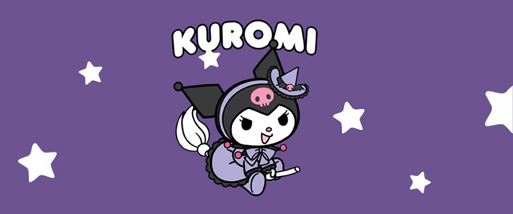
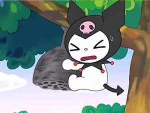
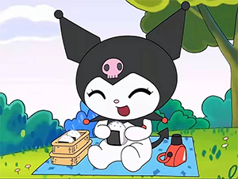

- 


- 
-

人物简介
库洛米（Kuromi）：因为小时候经常被Melody不自觉中欺负，所以一直很讨厌Melody，而且将Melody欺负她的事写在她的可罗米笔记。是马里兰乐园的通缉犯，经常被人叫作“黑头巾小朋友”。她有一只叫巴库的助手，一起致力为柊惠一收集黑色音符。非常非常喜欢柊惠一，经常幻想自己与柊惠一未来的生活。
作者简介
《奇幻魔法melody》，是一部以Sanrio旗下的My Melody玩偶作基础的日本动画，由 Comet工作室制作。片中囚犯可罗米从马里兰乐园的牢狱逃出来，带着旋律钥匙来到了人间世界。被皇室误会帮助可罗米逃狱的Melody，被国王派去人间世界阻止可罗米夺去人类的梦想，并赐予Melody旋律指挥棒以收集一百个粉红音符，就这样开始了人间之旅。